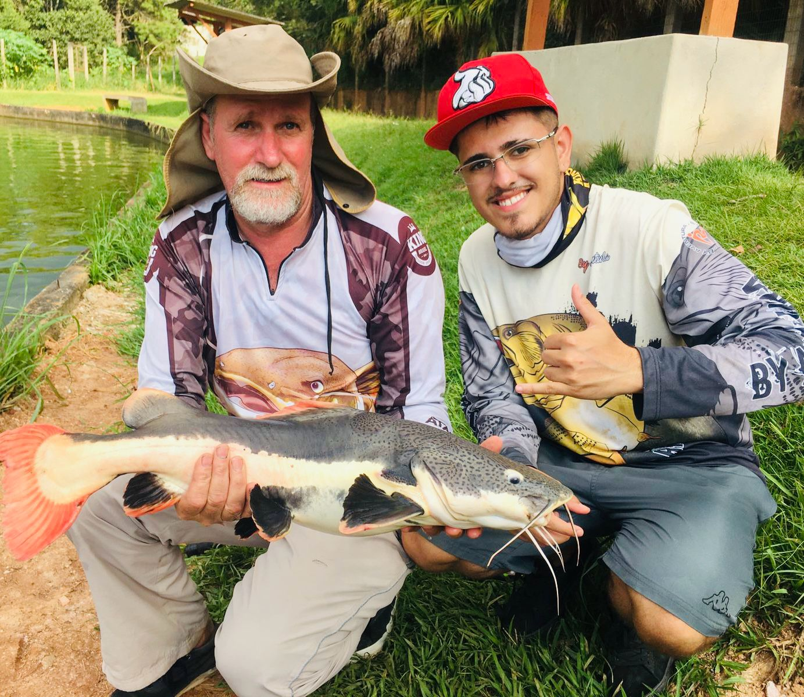

Nossa História: De Pai pra Filho

Nossa loja de pesca nasceu de uma paixão que atravessa gerações.Desde pequeno, Hélio acompanhava seu pai, Também Hélio, em pescarias memoráveis, onde aprendeu não apenas a arte de pescar, mas também o valor do tempo compartilhado entre pai e filho.
Meu Pai sempre dizia que a pescaria ensina paciência, respeito à natureza e, acima de tudo, fortalece os laços familiares. Inspirado por essa herança, decidi então transformar esse amor pela pesca em um negócio, criando um espaço onde outros pais e filhos pudessem viver as mesmas experiências inesquecíveis.
Além da paixão pela pesca, o nome da loja carrega um significado especial. Tanto o pai quanto o filho compartilham o nome Hélio, e foi essa conexão que inspirou o nome da nossa loja: Hélio's Pesca. Um símbolo da continuidade de uma tradição e do amor pela pescaria passada de geração em geração.
Hoje, nossa loja é mais do que um comércio; é um ponto de encontro para amantes da pesca, um lugar onde cada equipamento conta uma história e cada cliente faz parte da nossa família. Aqui, oferecemos os melhores produtos para tornar cada pescaria especial, seja para quem está começando ou para os mais experientes.
Seja bem-vindo à nossa loja, onde a tradição e a paixão pela pesca continuam a ser passadas de pai para filho!
Nosso Estabelecimento
Veja no mapa abaixo como nos encontrar!
"